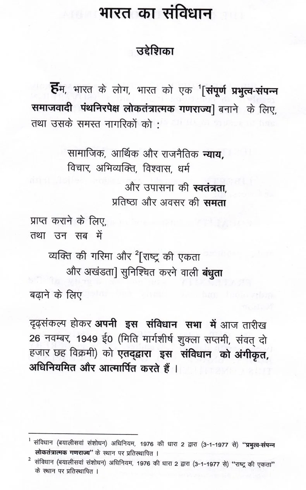

Meaning of Important Words of Preamble
-
हम भारत के लोग: इसका तात्पर्य यह है कि भारत एक प्रजातांत्रिक देश है तथा भारत के लोग ही सर्वोच्च संप्रभु हैं।
-
संप्रभुता: इसका अर्थ है कि भारत किसी अन्य देश पर निर्भर नहीं है और यह अपने आंतरिक और बाहरी मामलों का स्वतंत्र रूप से निस्तारण कर सकता है।
-
समाजवादी: समाजवादी का मतलब है कि उत्पादन के साधनों, संपत्ति आदि पर सार्वजनिक स्वामित्व हो और वितरण में समतुल्यता हो।
-
पंथनिरपेक्ष: संविधान में पंथनिरपेक्षता का तात्पर्य है कि हमारे देश में सभी धर्म समान हैं और राज्य किसी एक धर्म का समर्थन नहीं करता।
-
लोकतांत्रिक: इसमें न केवल राजनीतिक लोकतंत्र बल्कि सामाजिक और आर्थिक लोकतंत्र को भी शामिल किया गया है।
-
गणतंत्र: गणराज्य में राज्य प्रमुख एक निश्चित अवधि के लिए चुना जाता है और राजनीतिक संप्रभुता लोगों के हाथों में होती है।
-
स्वतंत्रता: यह नागरिक स्वतंत्रता को दर्शाता है, जिसे संविधान द्वारा स्थापित सीमाओं के भीतर इस्तेमाल किया जा सकता है।
-
न्याय: न्याय को सामाजिक, आर्थिक और राजनीतिक रूप में विभाजित किया गया है, जिसका उद्देश्य भेदभाव के बिना नागरिकों को समान अवसर प्रदान करना है।
-
समता: समता का अर्थ है समाज के किसी भी वर्ग के लिए विशेषाधिकारों का अभाव और बिना किसी भेदभाव के समान अवसर प्रदान करना।
-
बंधुत्व: इसका तात्पर्य भाईचारे की भावना से है, जो व्यक्ति के सम्मान और देश की एकता और अखंडता को सुनिश्चित करता है।